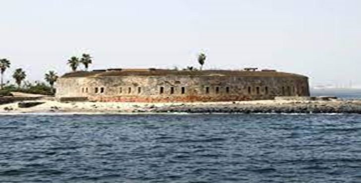
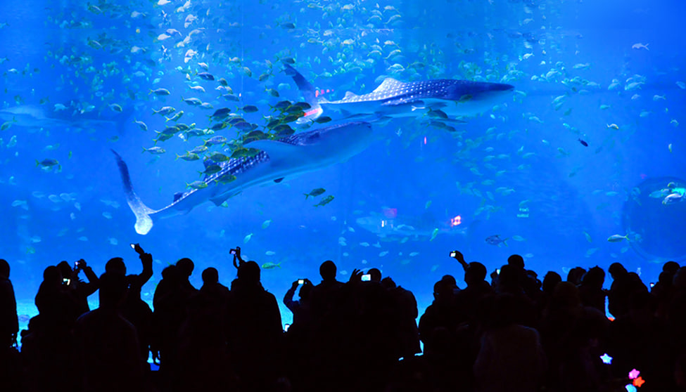
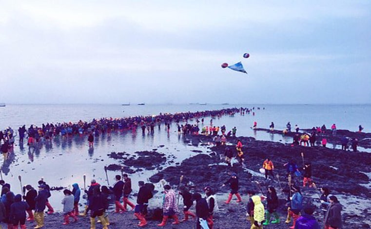
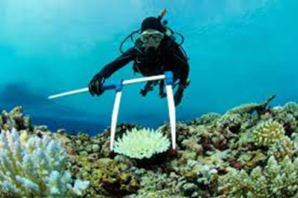
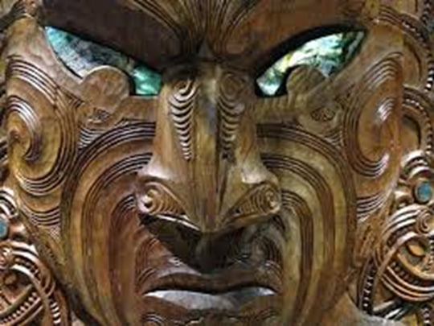

Cultural significance

Cultural Heritage Museums and ocean
Cultural heritage museums and ocean-related issues frequently interact, highlighting coastal communities' rich marine history and legacy. Exhibits on shipbuilding, navigation, shipwrecks, and the ocean's significance in cultural and economic development are common in these museums. Whaling museums educate visitors about the history of whaling, which was a substantial business in coastal areas. Fishing legacy museums preserve the fishing industry's history by displaying fishing gear, vessels, and traditions. Indigenous communities frequently have cultural heritage museums that showcase their relationship to the water, including traditional fishing practices and mythology focused on the sea. Seafaring art museums display paintings, sculptures, and other works of art representing maritime landscapes, ships, and sailors' lives.
In summary, cultural heritage museums and the ocean are closely connected in coastal regions, where the history, traditions, and economic activities of communities have been shaped by their proximity to the sea. These museums help preserve and celebrate the rich maritime heritage of these areas, while also educating visitors about the significance of the ocean in human culture and history. Ocean exploration and science museums concentrate on oceanography, marine biology, and deep-sea exploration. Visitors to lighthouse museums learn about maritime safety and the necessity of coastal navigation. Coastal archaeology museum’s exhibit artefacts from underwater archaeological sites, whereas ocean conservation museums educate the public about marine ecosystems and plastic waste. Coastal cultural heritage shows cultural variety and historical connections.
In summary, cultural heritage museums and the ocean are inextricably linked in coastal locations, where people' histories, traditions, and economic activities have been formed by their proximity to the sea. These museums strive to conserve and commemorate these places' rich maritime heritage while also teaching visitors about the ocean's significance in human culture and history.
Ocean Cultural Festivals
Ocean cultural festivals are gatherings that honor the unique cultural history of coastal communities as well as their profound ties to the water. These celebrations frequently include artistic, gastronomic, and cultural themes associated with the water and its impact on local cultures. The Hawaii Ocean Festival in Honolulu, USA, for example, promotes Hawaiian culture with hula performances and traditional Hawaiian music. San Sebastian's Day is a Basque celebration in Don ostia-San Sebastián, Spain, that involves maritime-themed events such as a rowing boat race.
The Fête de la Mer in Marseille celebrates the city's marine heritage with boat parades, seafood sampling, traditional music and dance performances and water sports activities. Makar Sankranti is celebrated in India when the sun enters the zodiac sign of Capricorn and is connected with kite flying and swimming in rivers or seas. In Buenos Aires, the Mundial de Tango contains themes relating to the water and the city's nautical past. In Sri Lanka, the Galle Literary Festival honors literature, and the arts, with a concentration on nautical themes. In New Bedford, Massachusetts, the Moby-Dick Marathon honors the city's whaling history and marine culture. Pirate festivals are held all over the world to raise environmental awareness and conservation initiatives. To summarize, ocean festivals can play an important role in raising awareness about ocean conservation and promoting sustainable practices. They can also celebrate the cultural and economic significance of the ocean, while providing opportunities for education and community engagement.
Indigenous Ocean Knowledge
Indigenous Ocean Knowledge Centers are non-profit organizations dedicated to preserving, promoting, and disseminating indigenous knowledge about oceans and marine ecosystems. They are directed by indigenous communities and organizations and play an important role in recognizing and respecting traditional ocean knowledge and practices. These centers gather, document, and conserve traditional knowledge such as sustainable fishing techniques, navigation techniques, and an awareness of local maritime species. They conduct study and collect data to better understand marine habitats and ecosystems, frequently blending indigenous knowledge with scientific methodologies to provide comprehensive and culturally relevant approaches.
Through workshops, seminars, and community outreach programs, they also hope to educate both indigenous and non-indigenous populations about the relevance of traditional ocean knowledge. They advocate for indigenous communities' rights and interests in marine conservation and management, working with governments, non-governmental organizations, and international organizations to ensure indigenous viewpoints are considered in policy and decision-making processes.
Overall, Indigenous Ocean Knowledge Centers are vital sites for integrating traditional indigenous wisdom with modern marine research and conservation activities. They are critical in encouraging sustainable practices. and fostering cultural resilience among indigenous communities connected to the ocean.
Oceanic Cultural Experiences
Oceanic cultural experiences provide a one-of-a-kind opportunity to learn about the different cultures of the Pacific Islands, including Polynesia, Melanesia, and Micronesia. Each island group has its own distinct dance and music history, such as the hula dance in Hawaii, the Siva Afi fire knife dance in Samoa, and the Tahitian dance in French Polynesia. Festivals and festivals highlight the islands' cultural past, while navigational practices such as the ancient art of wayfinding are being reintroduced in Hawaii. Tattooing, which has a long history in many Oceanic cultures, is also being studied in Samoa and New Zealand. Cultural experiences include particular flavors of Oceanic food, art and craftwork, and cultural institutes and museums, such as the Bishop Museum in Hawaii and Te Papa Tongarewa in New Zealand, dedicated to preserving and promoting the history and practices of Pacific Island civilizations.
When participating in these activities, remember to be respectful of local customs and traditions. Oceanic civilizations are extremely varied and provide several opportunities for significant and rewarding cultural contacts.
Conclusion
Cultural heritage museums protect coastal marine heritage while also educating tourists about the ocean's significance in human culture and history. Ocean cultural events combine artistic, gastronomic, and cultural components to commemorate coastal cultural histories. Hawaii Ocean Festival, San Sebastian's Day, fête de la Mer, Makar Sankranti, Mundial de Tango, Galle Literary Festival, Moby-Dick Marathon, and Pirate festivals all boost environmental awareness and conservation measures. Indigenous Ocean Knowledge Centers disseminate indigenous knowledge of seas and marine ecosystems.